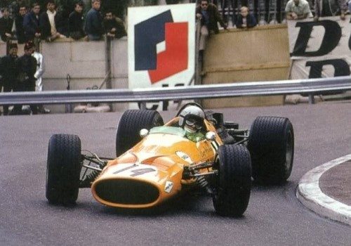
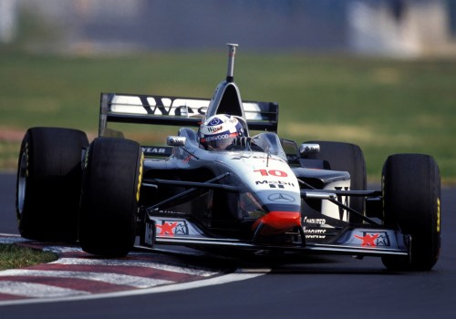
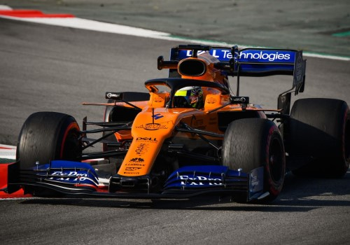

McLaren
Kezdetek (1966–1969)
Az első McLaren versenyautó a McLaren M1A volt 1964-ből. A "Bruce McLaren Motor Racing"et 1963-ban
alapította az új-Zélandi Bruce McLaren,
aki eredetileg sportautókat épített. A csapat 1966-ban debütált a Formula–1-ben, a monacói nagydíjon. A kezdeti
motorbeszállító a Ford volt. A csapatnak első két szezonjában csak egy versenyzője volt, maga az alapító
Bruce McLaren, aki az első versenyen
olajszivárgás miatt kiesett. Legközelebb csak az amerikai nagydíjon vett részt, ahol azonban új
motorral, a Serenissimával indult. A versenyen ötödik helyével a McLaren első pontjait szerezte. Az első
szezonban a csapat két ponttal a kilencedik lett. 1967-re a csapat új motorbeszállítója a BRM lett.
Bruce McLaren az évben egyszer lett negyedik
a monacói nagydíjon, és egyszer hetedik. A többi nagydíjon kiesett. A McLaren csapat három ponttal a tizedik lett a
konstruktőri bajnokságban. 1968-ra Bruce McLaren
csapattársa az előző évi világbajnok Denny Hulme lett,
aki 1974-ig a csapat versenyzője maradt. A csapat ebben az évben visszatért a Ford-Cosworth motorokhoz, melyeket egészen
1983-ig használt. Denny Hulme
megnyerte az Olasz és a kanadai nagydíjat, míg Bruce McLaren
a belga nagydíjat nyerte meg, amely a csapat első futamgyőzelme volt.
Bruce McLaren emellett megnyerte az az évi Race of
Champions-t, melyet Brands Hatchban rendeztek. A csapat 1968-tól több kiscsapatnak adott kasztnit. 1969-ben
Bruce McLaren három dobogós helyével és
26 pontjával a harmadik helyen zárt az egyéni világbajnokságban. A csapat ötödik győzelmét azonban
Denny Hulme szerezte a mexikói nagydíjon. A csapat
a negyedik helyen zárt a konstruktőri bajnokságban

A McLaren 1966-os autója

Bruce McLaren 1969-ben a Nürburgringen
1970-es évek
Az 1970-es év nagyon szerencsétlenül kezdődött a csapat számára. Az az évi indianapolisi 500-on, egy
gyakorláson megégtek Denny Hulme kezei
az autójából kifolyt és meggyulladt metanol miatt.
Peter Revson helyettesítette a futamon.
1970. június 2-án Bruce McLaren meghalt Goodwoodban,
mikor az új M8D Can-Am kategóriájú autót tesztelte. A McLaren 1970-ben és 1971-ben nem nyert versenyt, az években
Jochen Rindt és
Jackie Stewart dominált.
Bruce McLaren halála után a csapat első győzelmét
Denny Hulme 1972-ben szerezte, a
dél-afrikai nagydíjon, az M19C-vel. Denny Hulme
harmadik lett az év végén a versenyzők között, csapattársa
Peter Revson volt. A McLaren M23, melyet
Gordon Coppuck tervezett alapvetően az 1973-as, M16 elejét, és
az M19 hátulját tartalmazta. A modell már szintén ék alakú volt, hasonlóan a Lotus 72-höz. A modellel
Peter Revson a Brit és a Kanadai,
Denny Hulme a svéd nagydíjon tudott győzelmet aratni.
1974-re Emerson Fittipaldi
csatlakozott a csapathoz, aki korábban a Lotusnál versenyzett. A csapat ez évben megnyerte a
konstruktőri-és az egyéni címet (Emerson Fittipaldi) is.
A McLaren ez évben szerezte első indianapolisi 500-as
győzelmét is, Johnny Rutherforddal. Az évben a
Yardley helyére új főszponzor érkezett a Marlboro személyében, mely egészen 1996-ig maradt a csapat főszponzora.
Ennek következtében az addig használt narancssárga szín helyett piros-fehér lett az autók festése (az első néhány futamon
Új-Zéland hivatalos színével, a zölddel indultak). 1975 is sikeres év volt a McLaren számára,
Emerson Fittipaldi a második
lett Niki Lauda mögött a bajnokságban.
Jochen Mass első győzelmét szerezte Spanyolországban,
Johnny Rutherford második lett Indianapolisban.
Emerson Fittipaldi az év végén elhagyta a csapatot,
és testvére csapatához, a "Fittipaldi Automotive"-hez igazolt át. Helyére
James Hunt érkezett, aki 1976 végén egyetlen ponttal nyert
Niki Lauda előtt. Eközben
Johnny Rutherford a McLaren második indianapolisi
500-as győzelmét szerezte. James Hunt
1977-ben még három futamgyőzelmet aratott, ám ezek sokáig a csapat utolsó győzelmei voltak. A sikeres
M23 után az M26 modell már nem tudta felvenni a harcot az erősebb csapatok autóival. 1979-ben a rossz
eredmények miatt kivonult a CART sorozatból.
A McLaren M23-as modellje
A McLaren M26-os modellje
1980-as évek
1980-ban a McLarennél debütált Alain Prost a
Formula–1-ben, John Watson
volt. Alain Prost hamar
elhagyta a csapatot, 1981-ben már a Renaultnál versenyzett. A hosszantaró sikertelenségek miatt
Ron Dennist, aki előtte a Formula–2-ben dolgozott,
leszerződtették csapatfőnöknek. Ron Dennis hozott magával egy
mérnököt is, John Barnardot. Ők
John Hogannal és
Teddy Mayerrel Négyes Projekt néven kidolgoztak egy új
koncepciót (innen származik a McLaren autók nevében az MP4 jelzés - Marlboro (a dohányreklámok tiltása
óta McLaren) Project 4). 1983-tól turbófeltöltős motorokat kapott a csapat a TAG/Porsche-től. A
John Barnard által készített McLaren MP4/2 autó volt
az első a Formula–1-ben, amely szénszálas karosszériával épült. 1984-re visszatért
Alain Prost,
Niki Lauda mellé, aki 1982 óta volt a csapatnál és megnyerte
1984-ben a világbajnokságot. Alain Prost mindössze
fél ponttal végzett mögötte. 1985-ben viszont a francia végzett az élen. 1986-ban
Niki Lauda visszavonult a Formula–1-ből, helyére a finn
Keke Rosberg érkezett a
csapathoz, ez évben Alain Prost ismét az egyéni világbajnoki
tabella élén végzett. 1987-ben a svéd
Stefan Johansson
érkezett a McLarenhez. Az évadban a Williamsek domináltak, az egyéni világbajnokságot
Nelson Piquet nyerte,
Alain Prost csak a negyedik,
Stefan Johansson a hatodik lett.
1988-ra a korábban Lotusnál versenyző brazil Ayrton Senna lett
Alain Prost csapattársa, aki első McLarenes évét meg is nyerte.
Ez évtől váltott a csapat a Honda motorokra, melyek azokban az időkben a legerősebbek voltak. 1988-ban a tizenhat
versenyből tizenötöt a McLaren autó nyerték meg. Ayrton Senna
90 ponttal az első, Alain Prost 87-el a második helyen
végzett. 1989 hasonlóan sikeres év volt a McLaren számára. A bajnokság
Ayrton Senna és
Alain Prost között ismét
szoros volt, a világbajnoki cím eldőlése az utolsó japán nagydíjra maradt. Az első rajtkockát
Ayrton Senna szerezte meg,
Alain Prost azonban lerajtolta a brazilt.
Ayrton Senna a célegyenes előtti sikánban próbálta megelőzni,
de a francia nem engedte el, és összeütköztek. Alain Prost kiesett,
Ayrton Senna azonban tovább tudott menni, de
utólag diszkvalifikálták, és a világbajnoki cím így Alain Prosté lett.
A McLaren MP4/2-es szénszálas karosszériával
A McLaren 1998-as autója
1990-es évek
Alain Prost a
Ayrton Sennaval való botrányos párharca után a
Ferrarihoz szerződött. A következő két évben Ayrton Senna
és a McLaren nyerte az egyéni-és a csapatvilágbajnoki címet.
Ayrton Senna csapattársa
Alain Prost távozása után
Gerhard Berger volt. 1992-re a McLaren
dominancia véget ért, az évet fölényesen
Nigel Mansell és a
Williams-Renault nyerte. Az év végén a Honda visszavonult a Formula–1-es motorgyártástól. A McLaren
motorszállítója 1993-ra a Ford lett.
Ayrton Senna csapattársa ez évben
Michael Andretti volt, aki összesen hét
pontot szerzett. A szezon vége felé helyére a finn
Mika Häkkinent ültették. 1994-re
Ayrton Senna a Williamshez
igazolt át, helyére Martin Brundle érkezett, az
évben a Peugeot szállított motorokat a csapat számára. Egy évvel rá, 1995-ben a McLaren szerződést kötött a Mercedesszel.
A német gyár a 2014-es szezon végéig a csapat motorszállítója lett. 1995-ben két nagydíj erejéig
Nigel Mansell is versenyzett a csapat
színeiben. 1996-ban a korábban Williamses David Coulthard
szerződött a csapathoz. 1997-re a csapathoz a West cigarettamárka, mint főszponzor érkezett a Marlboro helyére. A korábbi piros-fehér
színt ez évben ezüstre cserélték. 1997-ben a McLaren egyre erősebb lett.
David Coulthard a szezonnyitó Ausztrál és az Olasz,
Mika Häkkinen az utolsó európai nagydíjat
nyerte meg. 1998-ra a McLaren leszerződtette az akkori egyik legsikeresebb mérnököt,
Adrian Neweyt.
Mika Häkkinen a szezon során nyolc futamot nyert meg,
az Ausztrál, a Brazil, a Spanyol, a Monacói, az Osztrák, a Német, a Luxemburgi és a japán nagydíjat. Az év végén kerek
100 ponttal végzett a egyéni világbajnokság élén. Legnagyobb ellenfele
Michael Schumacher volt, aki 89
pontot szerzett. A McLaren ez évben megszerezte a konstruktőr-világbajnoki címet. 1999-ben folytatódott
a Michael Schumacher –
Mika Häkkinen csata, de csak a brit nagydíjig,
amikor a német balesetet szenvedett és csak az évad vége előtt három versennyel tudott visszatérni.
Mika Häkkinen ismét világbajnok lett, két ponttal
Eddie Irvine előtt. A konstruktőri címet ebben az évben a Ferrari nyerte.

A McLaren MP4/12-es modellje a West szponzor színeiben
A McLaren MP4/14-es modellje 1999-ben
2000-es évek
A 2000-es évet Michael Schumacher nyerte a
Ferrarival, Mika Häkkinen 89 ponttal a
második lett. 2001-ben Mika Häkkinen
az egyéni bajnokságban a második
David Coulthard mögött végzett, ötödikként.
Mika Häkkinen 2002-re visszavonult a
Formula–1-ből, helyére a korábban Sauberes
Kimi Räikkönen érkezett. A csapat 2002-ben mindössze egy
futamgyőzelmet könyvelhetett el magának, a monacói nagydíjon, ahol
David Coulthard nyert. A csapat harmadik
lett a konstruktőrök versenyében a Ferrari és a Williams mögött. A 2003-as évben
Kimi Räikkönen mindössze két ponttal maradt el
Michael Schumachertől, aki hat, míg
Kimi Räikkönen csak egy futamgyőzelmet szerzett.
2004-re a csapat teljesítménye ismét visszaesett.
Kimi Räikkönen egy futamgyőzelmet szerzett, a belga
nagydíjon. A csapat az ötödik helyen végzett a konstruktőri bajnokságban a Ferrari, a BAR, a Renault, és
a Williams mögött. Michael Schumacher a szezon 18
futamából 13-at nyert meg. 2005-ben David Coulthard
a Red Bull Racinghez szerződött, helyére a kolumbiai
Juan Pablo Montoya került, aki két versenyen nem vett részt,
helyette a bahreini nagydíjon Pedro de la Rosa, a
San Marinó-i nagydíjon Alexander Wurz versenyzett. A
nehézkes kezdés után Kimi Räikkönen hét,
Juan Pablo Montoya három futamgyőzelmet aratott.
San Marinóban Kimi Räikkönen
megszerezte a pole-pozíciót, és a 9. körig vezette is a futamot, amikor technikai probléma miatt
kiesett. Hasonlóan vezette az európai nagydíjat is, mikor az utolsó körökben jobb első kereke leszakadt,
és kiesett. A német nagydíjon szintén az első rajtkockából indult, motorhiba miatt kiesett.
Fernando Alonso 133 ponttal megnyerte a 2005-ös egyéni bajnoki címet,
míg Kimi Räikkönen 112 ponttal a második lett.
Juan Pablo Montoya a negyedik helyen végzett. Az év közepén
a West, mint főszponzor, elhagyta a csapatot, az ezüst színezést, krómhatásúra módosítva, azonban megtartották, a Mercedes-motorok miatt.
Az új szponzorok miatt a piros szín ismét hangsúlyosabb lett az autókon. 2006-ban a csapat ismét abban reménykedett, hogy
a bajnoki címért fognak harcolni, ám a téli tesztek során kiderült, hogy az új Mercedes V8-as motor nem
volt túl erős, sem megbízható. Miután
Juan Pablo Montoya az amerikai nagydíj rajtjánál
kiütötte csapattársát, és mindketten kiestek, a verseny után elbocsátották a csapattól.
Juan Pablo Montoya a McLarennel együtt a Formula–1-et
is elhagyta, helyére a csapat tesztversenyzőjét,
Pedro de la Rosat ültették be, aki a magyar nagydíjon
második lett.

A McLaren MP4/20-as modellje 2005-ben
A McLaren MP4/21-es modellje 2006-ban
A 2007-es évet teljesen új felállással kezdték, 2006 novemberében a McLaren-Mercedes
Lewis Hamiltont szerződtette le a világbajnok
Fernando Alonso mellett. 2007-ben a csapat főszponzora a
Vodafone lett. A csapat legnagyobb ellenfele ez évben a Renault visszaesését követően a Ferrari volt. A csapat nagyon
erősen kezdte az évet, Ausztráliában
Fernando Alonso második, az újonc
Lewis Hamilton harmadik lett
Kimi Räikkönen mögött.
Lewis Hamilton első nyolc versenyén dobogós lett,
Fernando Alonso négy versenyt nyert, és egy kivétellel
mindegyiken pontot szerzett. A szezon előrehaladtával egyre inkább romlott a két versenyző kapcsolata. A
konfliktusok csúcsa a magyar nagydíj volt, ahol Fernando Alonso
megakadályozta Lewis Hamiltont, hogy mért időt fusson
az időmérő edzésen, bár előtte
Lewis Hamilton is megszegte azt a megállapodást, miszerint
Fernando Alonsot előre kellett volna engednie az etap alatt.
Fernando Alonsot ezért azzal büntette a versenybíróság, hogy
öt rajthellyel hátrébb sorolták. A versenyt
Lewis Hamilton nyerte, de az FIA elvette a csapat a
nagydíjon szerzett konstruktőri pontjait. A McLaren a világbajnoki cím legnagyobb esélyese volt szinte az egész szezon
során, miután az utolsó, brazil nagydíjon Fernando Alonso
a harmadik lett a két Ferrari mögött, Lewis Hamilton pedig
technikai problémák miatt csak a hetedik lett, így a 2007-es egyéni világbajnoki címet
Kimi Räikkönen szerezte meg. A 2007-es belga nagydíj
előtt kizárták a McLarent az az évi konstruktőri bajnokságból, pedig a csapat megnyerte volna a konstruktőri világbajnoki címet
(a McLaren pilótái 218 pontot gyűjtöttek a Ferrarisok 204-et az év során). Emellett 100 millió dollárra büntették meg, miután
kiderült, hogy a Ferraris Nigel Stepney a McLarenes
Mike Coughlan számára adott át a Ferrari tulajdonát
képező dokumentumokat, amiket fel sem használtak az év során.
Lewis Hamilton és
Fernando Alonso viszont – mivel együttműködtek a hatóságokkal
a vizsgálat során – megtarthatták pontjaikat de a világbajnoki címről lecsúsztak 1-1 ponttal. A csapat két versenyzőjének 2008-as
rajtszáma emiatt a 22-es és a 23-as lett. A bokszutcában is eredetileg az utolsó garázs lett volna az övék 2008-ban, de végül az ötödiket
kapták meg, mert a személyzet és a felszerelések nem fértek volna el az utolsó garázsban. A két
versenyző elmérgesedett viszonya miatt Fernando Alonso visszament
a Renault-hoz, helyére a finn
Heikki Kovalainent ültették be. A bajnokság végig kiélezett
volt a McLaren és a Ferrari között, a versenyzők közt pedig Felipe Massa
és Lewis Hamilton küzdöttek egymás ellen.
A brazil nagydíj, a szezon legutolsó futama döntött el mindent: kezdetben az eleredő eső miatt
Lewis Hamilton az 5. helyre esett vissza. A verseny
végén Sebastian Vettel is megelőzte, ezért a mclarenes
visszacsúszott a bajnoki címhez nem elegendő 6. helyre.
Lewis Hamilton végül az utolsó körben előzte meg
Timo Glockot (aki nem váltott esőgumira), megnyerve a
világbajnokságot. A McLaren második lett a konstruktőri bajnokságban. A 2009-es szezon előtti teszteken
bebizonyosodott, hogy óriási lemaradással küzd a világbajnok gárda. Tesztről tesztre fejlődtek, ám
Ausztráliába így is óriási lemaradással érkeztek.
Heikki Kovalainen a 12. míg csapattársa váltócsere miatt az
utolsó rajtkockáról kezdhette meg az idény első futamát.
Heikki Kovalainen balesetet szenvedve már az első
körben kiesett, míg a regnáló világbajnok a harmadik helyen ért be, ám a futam után kizárták őket a
versenybírák megtévesztése miatt. A következő versenyeken a csapat végig meglehetősen versenyképtelen
volt, Lewis Hamilton több alkalommal sem tudta magát az időmérő
utolsó szakaszába juttatni. Ennek ellenére tisztességgel helytálltak, és a konstruktőri bajnokságban legalább egy harmadik helyet meg tudtak csípni.
A McLaren MP4/23-as modellje 2008-ban
A McLaren 2009-es autója
2010-es évek
2010-ben az előző évi világbajnok
Jenson Button igazolt a
McLarenhez, aki aztán tőlük is vonult vissza hat évvel később. A csapat formája változó volt, a bajnokságban
Lewis Hamilton a 4.,
Jenson Button pedig
5. lett. Lewis Hamilton megnyerte a török, a kanadai és
a belga futamot, míg csapattársa az ausztrál és a kínai nagydíjon diadalmaskodott. 2011-ben változatlan felállással kezdték meg az évet.
Hat győzelmet arattak, a csapat konstruktőri második lett, sőt
Jenson Button nem sokkal
lemaradva világbajnoki ezüstérmes lett. 2012-ben az egymással viaskodó Red Bull és Ferrari mellett nem rúghattak labdába, és
emellett megbízhatósági problémák is hátráltatták őket. Miután kiderült, hogy 2013-ban
Lewis Hamilton a Mercedeshez igazol, helyére leszerződtették
a 2012-es év tehetségét, Sergio Pérezt. 2013 tavaszán
bejelentették, hogy a Honda 2015-ben a McLaren partnereként tér majd vissza a sportban. Sajnos
Sergio Pérez egyáltalán nem hozta azt, amit vártak tőle,
és az autó is a csapat egyik leggyengébbje lett, amellyel a szezonban még csak egy dobogós helyezést sem tudtak elérni az idényben, ami
1980-tól egészen addig nem fordult elő velük. A rossz évet követően
Ron Dennis ismét a csapat élére lépett,
Sergio Pérezt kirúgták, a
helyére pedig Kevin Magnussent ültették. A csapat 2014-ben
még a Mercedes turbómotorját használta. Ez az év sem sikerült túl jól számukra: főszponzor nélkül indultak egyenkróm színű autókkal,
és az évadnyitó Ausztrál Nagydíjon elért dobogós helyezéseiket leszámítva a legjobb eredményük egy negyedik hely volt.
2015-ben két évtizedes közös munka után a McLaren és a Mercedes útjai különváltak, a csapat új
motorszállítója pedig a sportba visszatérő Honda lett. Az új érának két világbajnokkal vágtak neki, a
csapathoz 2007 után visszatérő Fernando Alonsoval és
Jenson Buttonnal. Már a szezont
megelőző teszteken körvonalazódott, hogy a Honda erőforrásának teljesítménye és megbízhatósága is messze elmarad a
vetélytársakéhoz képest. A felkészülési időszakban rengeteg műszaki probléma hátráltatta a csapatot a
felkészülésben. Fernando Alonsot pedig egy rejtélyes baleset
érte az egyik szezon előtti teszten amely miatt a szezonnyitó futamot is ki kellett hagynia. A szezon kezdetével kiderült, a
McLaren-Hondának nem igazán sikerült megoldania a téli felkészülés alkalmával felmerült gondokat, és bár rengeteget
fejlesztettek, a szezont végig a technikai problémák jellemezték, a lassú kanyarokkal tűzdelt, és
motorikusan kevésbé igényes pályákat leszámítva pedig általában a középmezőnnyel sem tudták felvenni a
harcot. A csapat így minden idők leggyengébb eredményét produkálta. A 2016-os évet már sokkal
ígéretesebben kezdték: kevesebb volt a műszaki hiba, az autó meghibásodásainak száma lecsökkent, a motor
teljesítménye azonban továbbra is nagyon gyenge volt. Ezek ellenére rendszereseké váltak a
pontszerzések, és a konstruktőrök közt a 6. helyet is sikerült megszerezniük.
Fernando Alonso MP4/30-asa 2015-ben
A McLaren 2017-es autója
2017-ben elbocsátották a csapat éléről Ron Dennist az új
tulajdonosok, helyette Zak Brown, mint igazgató
vezette azt. A régi időkkel való leszámolás jegyében először megváltoztatták az autók kódnevét az addig
használt MP4-ről MCL-re, majd a színvilágot cserélték le az első időszakra jellemző narancs-feketére.
Fernando Alonso maradt az egyik versenyzőjük, míg a
(hivatalosan) egyéves szünetet töltő
Jenson Button helyére
Stoffel Vandoorne ült be, aki 2016-ban egy versenyen már
bizonyított. A Honda erre az évre teljesen áttervezte a motort, ami katasztrofális lépésnek bizonyult: sokkal gyengébb és meghibásodásra
hajlamos volt, mint eddig bármikor. A viszony annyira megromlott a csapat és a motorszállító között, hogy az év vége előtt
szerződést bontottak, és 2018-ra aláírtak a Renault-val. A 2018-as szezonnak az új motorpartnernek
köszönhetően nagy reményekkel és az előző évi
Fernando Alonso -
Stoffel Vandoorne versenyzőpárossal vágtak neki. A nagy
előrelépés azonban elmaradt. A megbízhatóság sokat javult, a versenytempó is némileg jobb lett az előző
évhez képest, viszont korántsem olyan mértékben, mint ahogy azt a csapat és a szurkolók remélték. Emiatt
sok kritika is érte a csapatot a szurkolók és a közvélemyény részéről. Emellett vagy inkább ennek
következtében évközben nagy átszervezésbe kezdett a csapat, távozott többek között az addigi
csapatvezető, Eric Boullier. Augusztus közepén pedig
Fernando Alonso is bejelentette távozását a
csapattól és a Formula-1-ből egyaránt. Fernando Alonso
bejelentése után néhány nappal pedig bejelentették
Carlos Sainz érkezését a csapathoz. A 2019-es idényt
Carlos Sainz és
Lando Norris párossal kezdték.
A McLaren 2018-as autója

A McLaren 2019-es autója